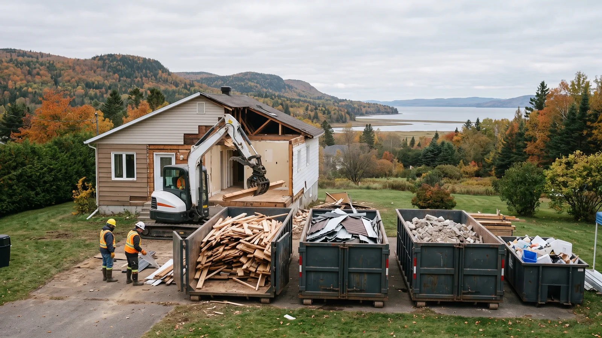
regions · bas-saint-laurentPetit chantier de démontage résidentiel au Bas-Saint-Laurent, matériaux triés dans des contenants, paysage discret. Photographie documentaire haut de gamme, démolition résidentielle québécoise réaliste, chantier propre et calme, proportions crédibles, lumière naturelle, composition horizontale 16:9, aucun texte lisible, aucun logo, aucune adresse, aucune explosion, aucun effondrement, aucun travailleur sans équipement de protection.
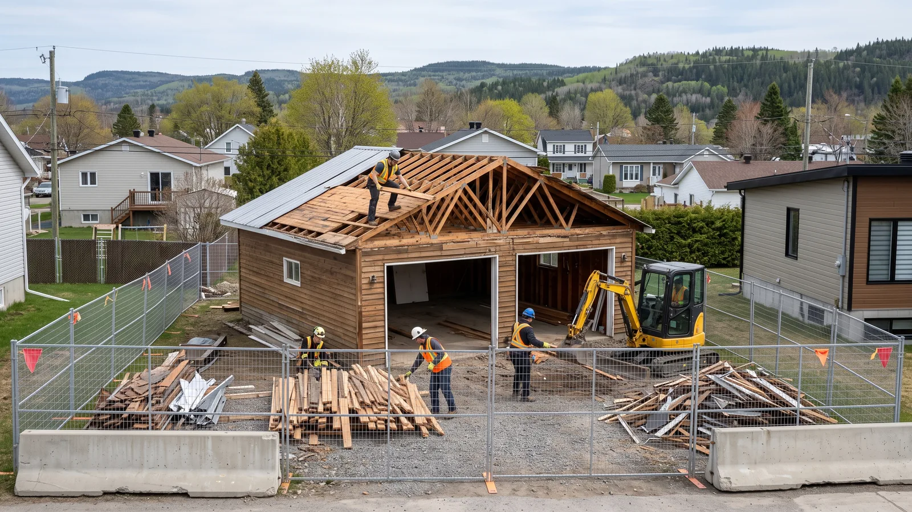
regions · saguenay-lac-saint-jeanGarage résidentiel en démontage contrôlé au Saguenay–Lac-Saint-Jean, zone de travail clôturée. Photographie documentaire haut de gamme, démolition résidentielle québécoise réaliste, chantier propre et calme, proportions crédibles, lumière naturelle, composition horizontale 16:9, aucun texte lisible, aucun logo, aucune adresse, aucune explosion, aucun effondrement, aucun travailleur sans équipement de protection.
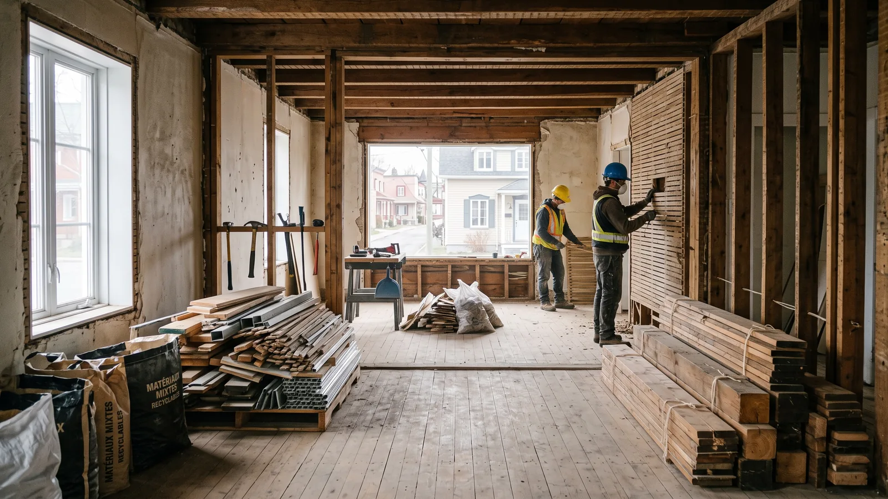
regions · capitale-nationaleRénovation avec démolition intérieure contrôlée dans la Capitale-Nationale, pièce dégagée et matériaux regroupés. Photographie documentaire haut de gamme, démolition résidentielle québécoise réaliste, chantier propre et calme, proportions crédibles, lumière naturelle, composition horizontale 16:9, aucun texte lisible, aucun logo, aucune adresse, aucune explosion, aucun effondrement, aucun travailleur sans équipement de protection.
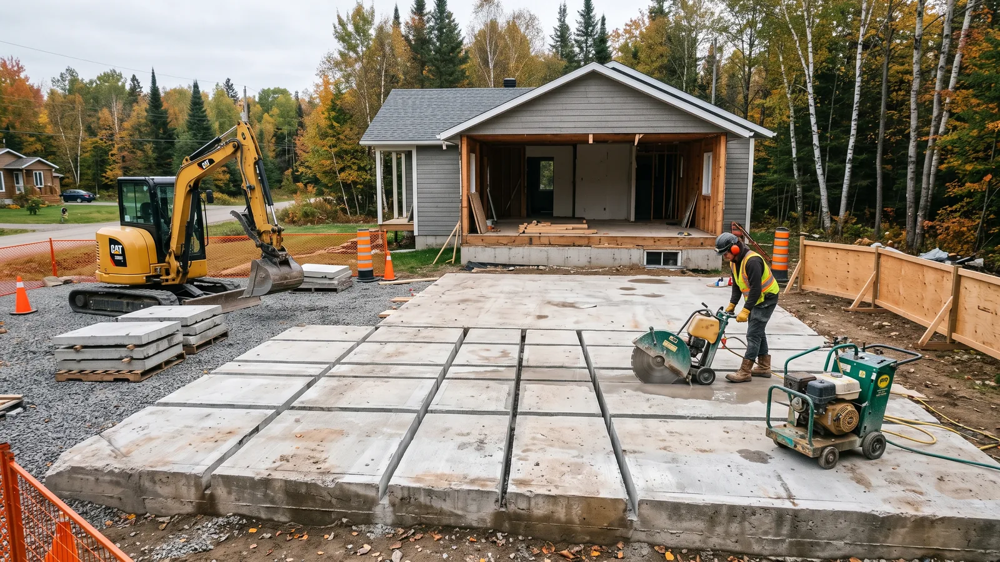
regions · mauricieDalle de béton résidentielle découpée en sections en Mauricie, chantier ordonné. Photographie documentaire haut de gamme, démolition résidentielle québécoise réaliste, chantier propre et calme, proportions crédibles, lumière naturelle, composition horizontale 16:9, aucun texte lisible, aucun logo, aucune adresse, aucune explosion, aucun effondrement, aucun travailleur sans équipement de protection.
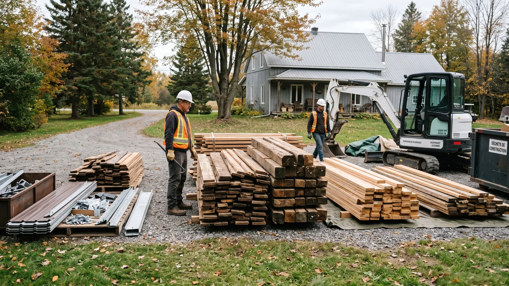
regions · estrieRemise résidentielle démontée en Estrie, bois trié et terrain propre. Photographie documentaire haut de gamme, démolition résidentielle québécoise réaliste, chantier propre et calme, proportions crédibles, lumière naturelle, composition horizontale 16:9, aucun texte lisible, aucun logo, aucune adresse, aucune explosion, aucun effondrement, aucun travailleur sans équipement de protection.
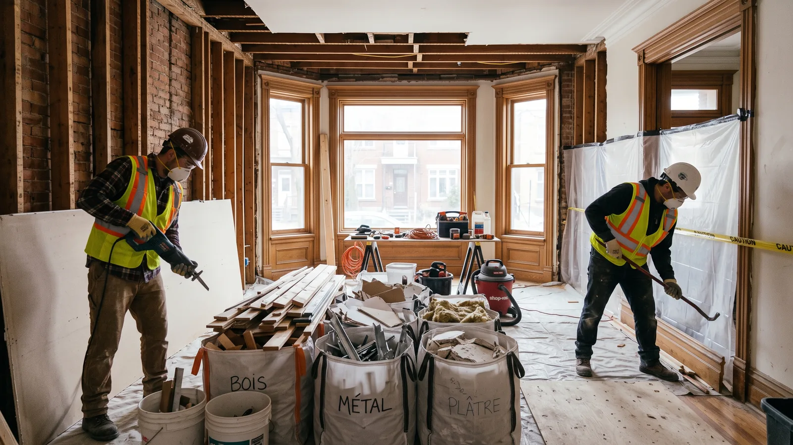
regions · montrealDémolition intérieure planifiée dans un duplex montréalais, espace protégé et débris triés. Photographie documentaire haut de gamme, démolition résidentielle québécoise réaliste, chantier propre et calme, proportions crédibles, lumière naturelle, composition horizontale 16:9, aucun texte lisible, aucun logo, aucune adresse, aucune explosion, aucun effondrement, aucun travailleur sans équipement de protection.
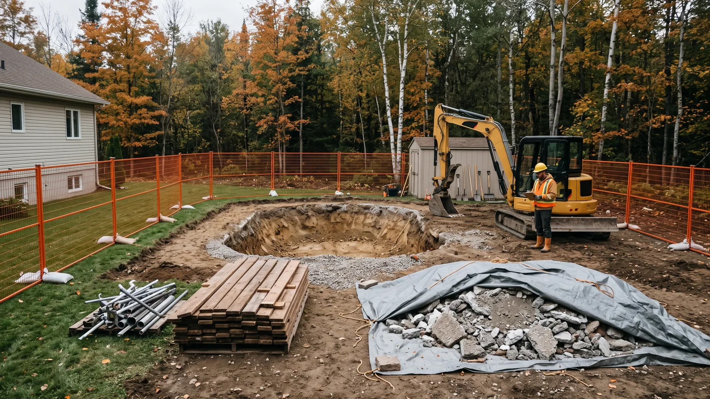
regions · outaouaisAncienne piscine résidentielle retirée en Outaouais, cour sécurisée et matériaux regroupés. Photographie documentaire haut de gamme, démolition résidentielle québécoise réaliste, chantier propre et calme, proportions crédibles, lumière naturelle, composition horizontale 16:9, aucun texte lisible, aucun logo, aucune adresse, aucune explosion, aucun effondrement, aucun travailleur sans équipement de protection.
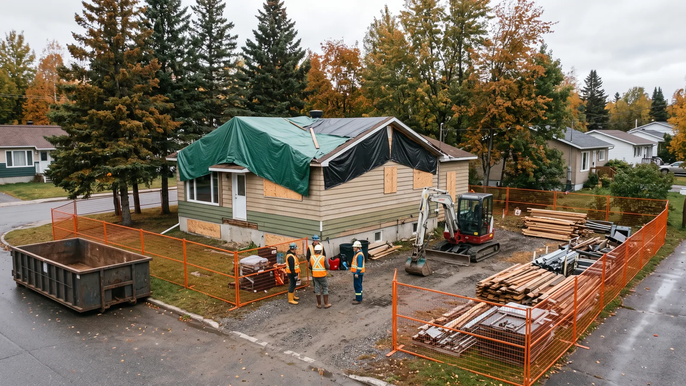
regions · abitibi-temiscaminguePetit bâtiment résidentiel préparé pour démontage en Abitibi-Témiscamingue, contexte nordique réaliste. Photographie documentaire haut de gamme, démolition résidentielle québécoise réaliste, chantier propre et calme, proportions crédibles, lumière naturelle, composition horizontale 16:9, aucun texte lisible, aucun logo, aucune adresse, aucune explosion, aucun effondrement, aucun travailleur sans équipement de protection.
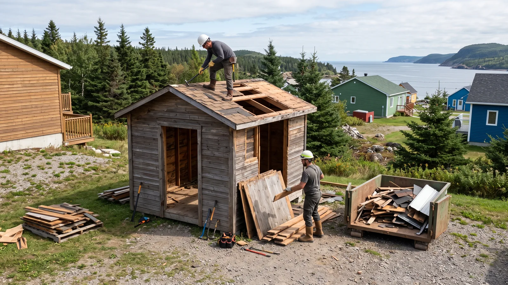
regions · cote-nordRemise compacte en démontage contrôlé sur la Côte-Nord, environnement résidentiel boréal. Photographie documentaire haut de gamme, démolition résidentielle québécoise réaliste, chantier propre et calme, proportions crédibles, lumière naturelle, composition horizontale 16:9, aucun texte lisible, aucun logo, aucune adresse, aucune explosion, aucun effondrement, aucun travailleur sans équipement de protection.
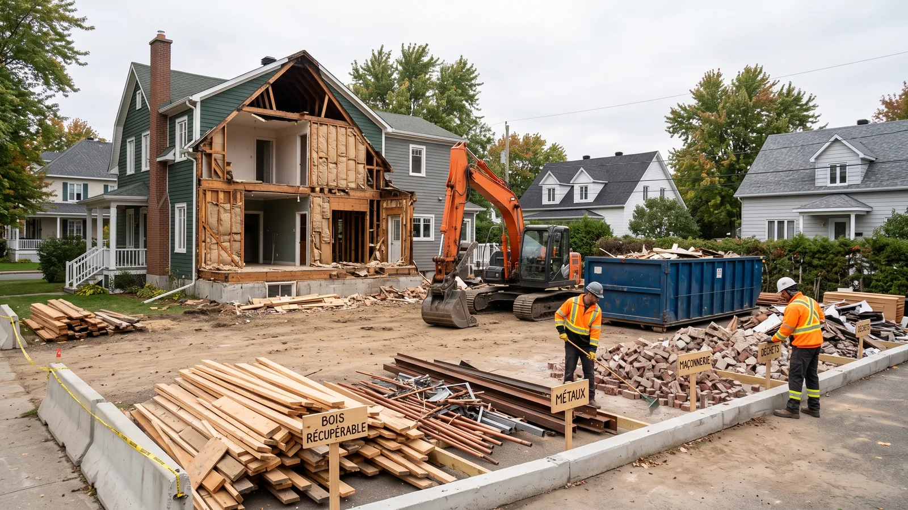
regions · nord-du-quebecChantier résidentiel nordique avec matériaux de démolition soigneusement triés. Photographie documentaire haut de gamme, démolition résidentielle québécoise réaliste, chantier propre et calme, proportions crédibles, lumière naturelle, composition horizontale 16:9, aucun texte lisible, aucun logo, aucune adresse, aucune explosion, aucun effondrement, aucun travailleur sans équipement de protection.
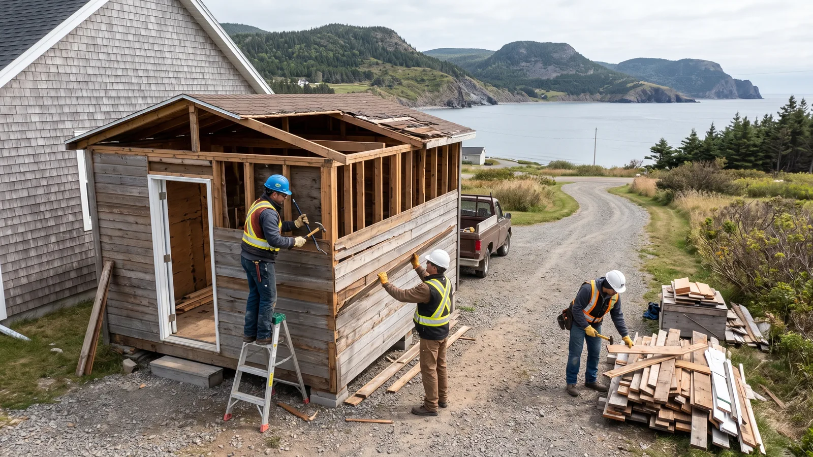
regions · gaspesie-iles-de-la-madeleineDémontage prudent d'une petite annexe résidentielle en Gaspésie–Îles-de-la-Madeleine, contexte côtier discret. Photographie documentaire haut de gamme, démolition résidentielle québécoise réaliste, chantier propre et calme, proportions crédibles, lumière naturelle, composition horizontale 16:9, aucun texte lisible, aucun logo, aucune adresse, aucune explosion, aucun effondrement, aucun travailleur sans équipement de protection.
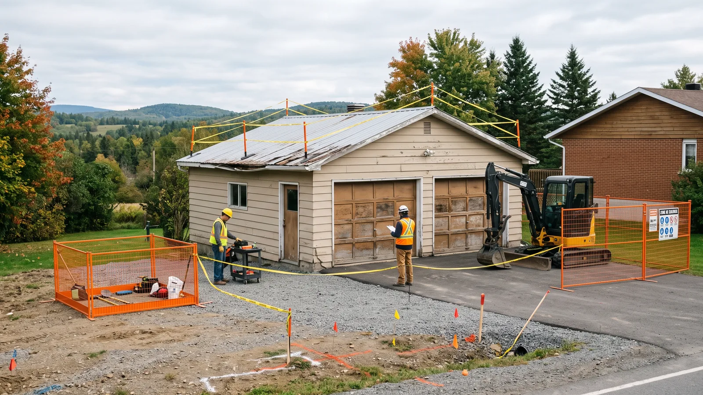
regions · chaudiere-appalachesGarage résidentiel préparé pour démolition en Chaudière-Appalaches, zone de travail nette. Photographie documentaire haut de gamme, démolition résidentielle québécoise réaliste, chantier propre et calme, proportions crédibles, lumière naturelle, composition horizontale 16:9, aucun texte lisible, aucun logo, aucune adresse, aucune explosion, aucun effondrement, aucun travailleur sans équipement de protection.
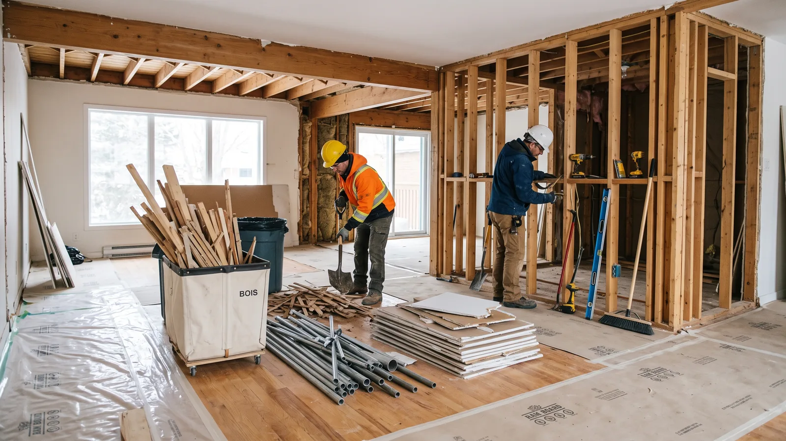
regions · lavalDémolition intérieure résidentielle à Laval, protections temporaires et matériaux triés. Photographie documentaire haut de gamme, démolition résidentielle québécoise réaliste, chantier propre et calme, proportions crédibles, lumière naturelle, composition horizontale 16:9, aucun texte lisible, aucun logo, aucune adresse, aucune explosion, aucun effondrement, aucun travailleur sans équipement de protection.
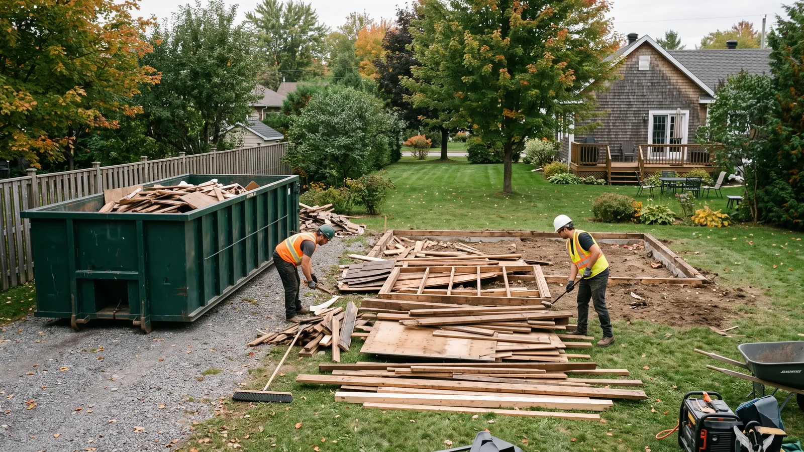
regions · lanaudiereRemise résidentielle démontée dans Lanaudière, cour familiale et conteneur sans marque. Photographie documentaire haut de gamme, démolition résidentielle québécoise réaliste, chantier propre et calme, proportions crédibles, lumière naturelle, composition horizontale 16:9, aucun texte lisible, aucun logo, aucune adresse, aucune explosion, aucun effondrement, aucun travailleur sans équipement de protection.
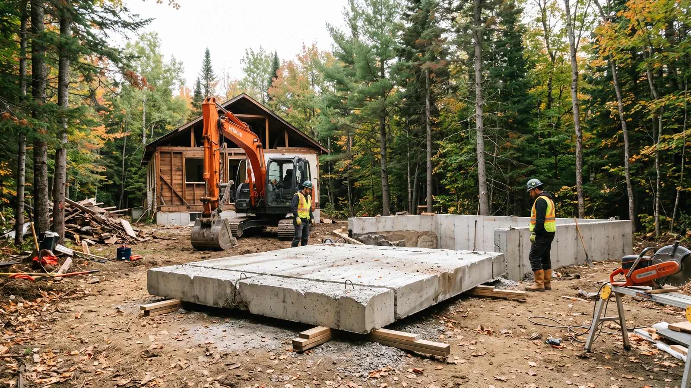
regions · laurentidesDalle de béton découpée dans les Laurentides, terrain boisé et proportions réalistes. Photographie documentaire haut de gamme, démolition résidentielle québécoise réaliste, chantier propre et calme, proportions crédibles, lumière naturelle, composition horizontale 16:9, aucun texte lisible, aucun logo, aucune adresse, aucune explosion, aucun effondrement, aucun travailleur sans équipement de protection.
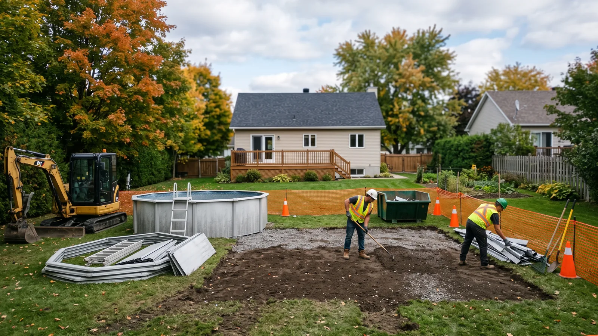
regions · monteregiePiscine hors terre retirée en Montérégie, chantier résidentiel propre et sécurisé. Photographie documentaire haut de gamme, démolition résidentielle québécoise réaliste, chantier propre et calme, proportions crédibles, lumière naturelle, composition horizontale 16:9, aucun texte lisible, aucun logo, aucune adresse, aucune explosion, aucun effondrement, aucun travailleur sans équipement de protection.
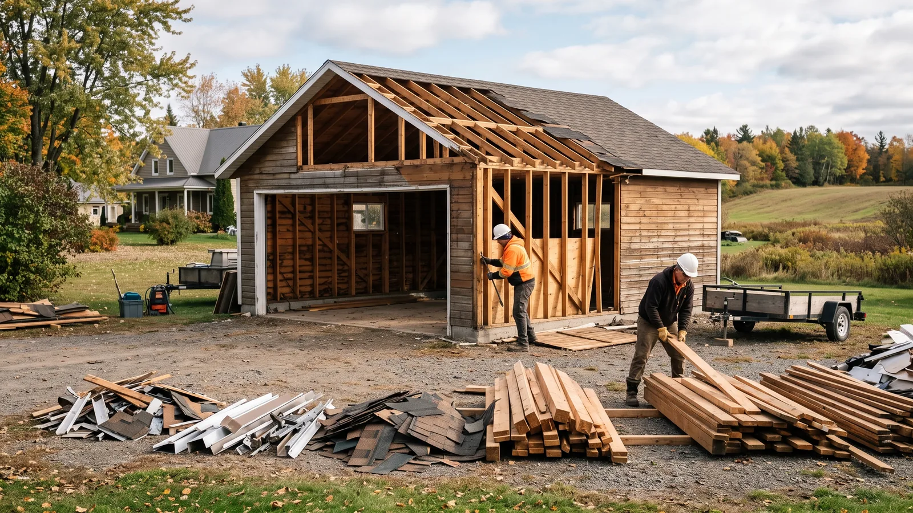
regions · centre-du-quebecGarage détaché en démontage contrôlé au Centre-du-Québec, matériaux séparés par type. Photographie documentaire haut de gamme, démolition résidentielle québécoise réaliste, chantier propre et calme, proportions crédibles, lumière naturelle, composition horizontale 16:9, aucun texte lisible, aucun logo, aucune adresse, aucune explosion, aucun effondrement, aucun travailleur sans équipement de protection.
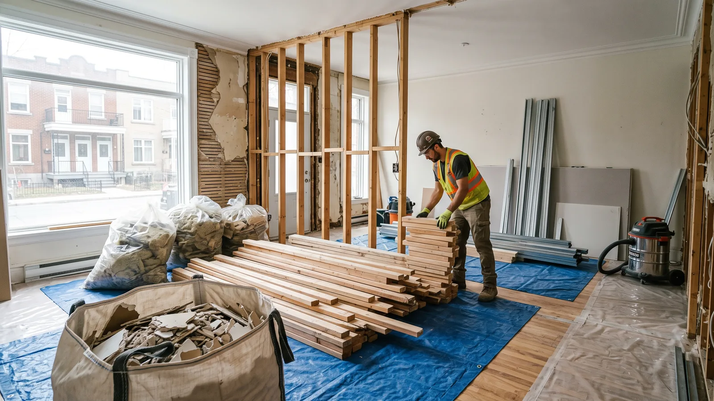
cities · montrealDémolition intérieure contrôlée dans un duplex montréalais, protections et débris triés. Photographie documentaire haut de gamme, démolition résidentielle québécoise réaliste, chantier propre et calme, proportions crédibles, lumière naturelle, composition horizontale 16:9, aucun texte lisible, aucun logo, aucune adresse, aucune explosion, aucun effondrement, aucun travailleur sans équipement de protection.
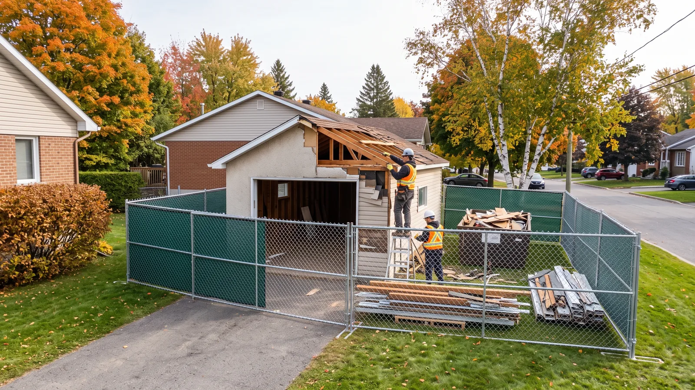
cities · quebecDémontage prudent d'un garage résidentiel à Québec, clôture temporaire et terrain propre. Photographie documentaire haut de gamme, démolition résidentielle québécoise réaliste, chantier propre et calme, proportions crédibles, lumière naturelle, composition horizontale 16:9, aucun texte lisible, aucun logo, aucune adresse, aucune explosion, aucun effondrement, aucun travailleur sans équipement de protection.
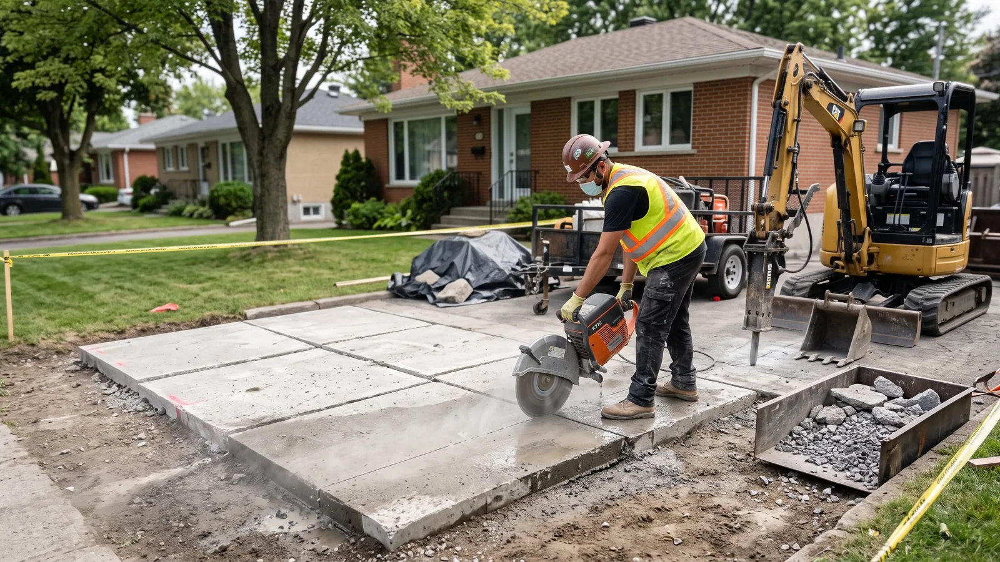
cities · lavalDalle de béton résidentielle découpée à Laval, chantier compact et ordonné. Photographie documentaire haut de gamme, démolition résidentielle québécoise réaliste, chantier propre et calme, proportions crédibles, lumière naturelle, composition horizontale 16:9, aucun texte lisible, aucun logo, aucune adresse, aucune explosion, aucun effondrement, aucun travailleur sans équipement de protection.
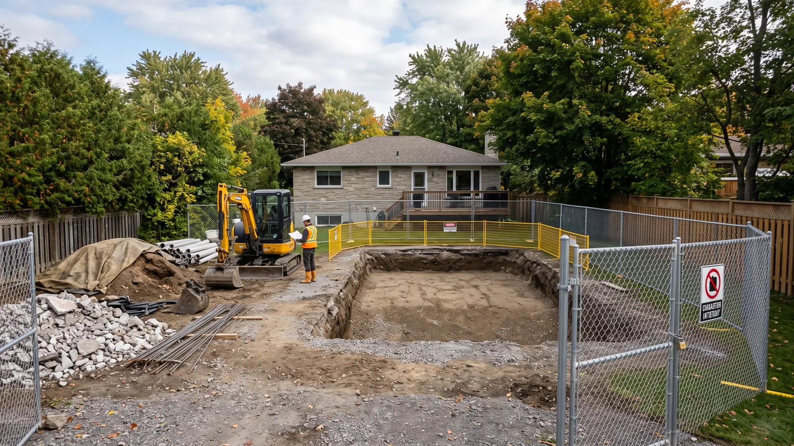
cities · gatineauPiscine résidentielle retirée à Gatineau, cour sécurisée et matériaux regroupés. Photographie documentaire haut de gamme, démolition résidentielle québécoise réaliste, chantier propre et calme, proportions crédibles, lumière naturelle, composition horizontale 16:9, aucun texte lisible, aucun logo, aucune adresse, aucune explosion, aucun effondrement, aucun travailleur sans équipement de protection.
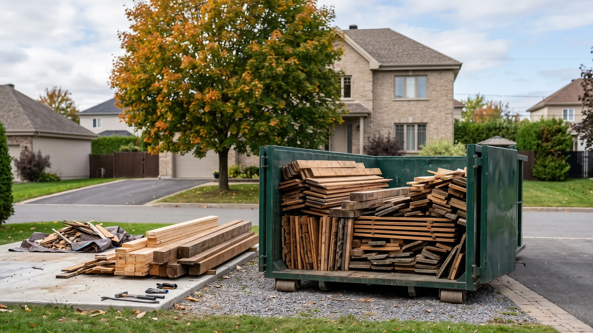
cities · longueuilRemise résidentielle démontée à Longueuil, bois trié dans un conteneur neutre. Photographie documentaire haut de gamme, démolition résidentielle québécoise réaliste, chantier propre et calme, proportions crédibles, lumière naturelle, composition horizontale 16:9, aucun texte lisible, aucun logo, aucune adresse, aucune explosion, aucun effondrement, aucun travailleur sans équipement de protection.
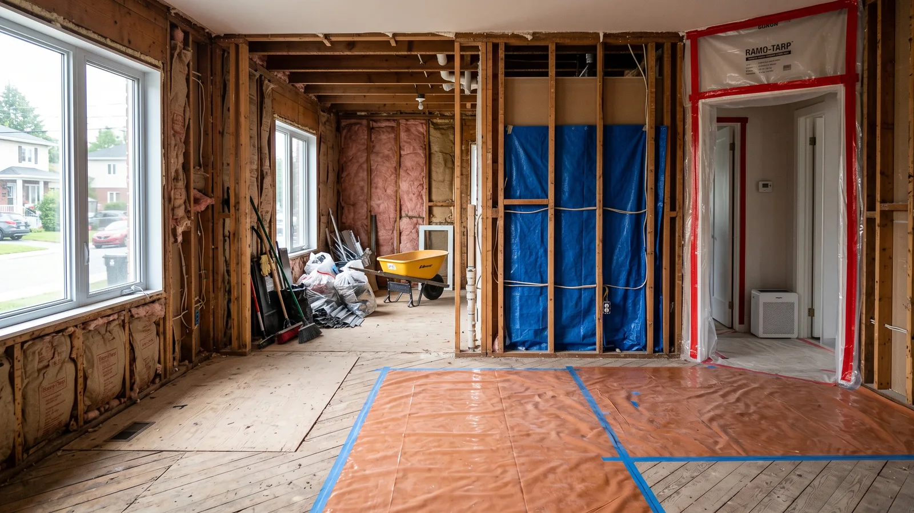
cities · sherbrookeDémolition intérieure résidentielle à Sherbrooke, pièce dégagée et protections visibles. Photographie documentaire haut de gamme, démolition résidentielle québécoise réaliste, chantier propre et calme, proportions crédibles, lumière naturelle, composition horizontale 16:9, aucun texte lisible, aucun logo, aucune adresse, aucune explosion, aucun effondrement, aucun travailleur sans équipement de protection.
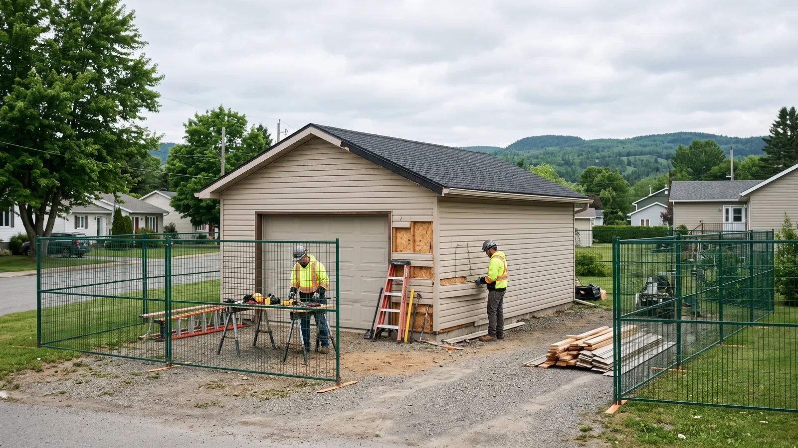
cities · saguenayGarage détaché préparé pour démontage à Saguenay, chantier calme et réaliste. Photographie documentaire haut de gamme, démolition résidentielle québécoise réaliste, chantier propre et calme, proportions crédibles, lumière naturelle, composition horizontale 16:9, aucun texte lisible, aucun logo, aucune adresse, aucune explosion, aucun effondrement, aucun travailleur sans équipement de protection.
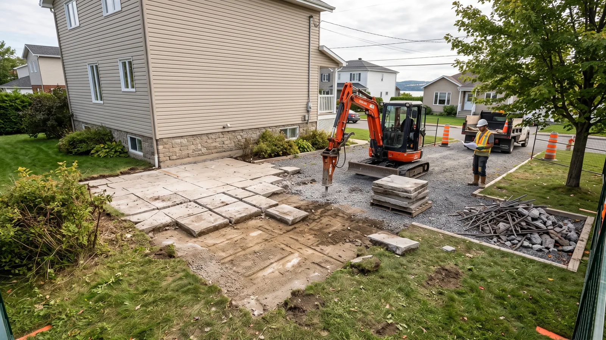
cities · levisAncienne terrasse de béton retirée à Lévis, sections découpées et zone nette. Photographie documentaire haut de gamme, démolition résidentielle québécoise réaliste, chantier propre et calme, proportions crédibles, lumière naturelle, composition horizontale 16:9, aucun texte lisible, aucun logo, aucune adresse, aucune explosion, aucun effondrement, aucun travailleur sans équipement de protection.
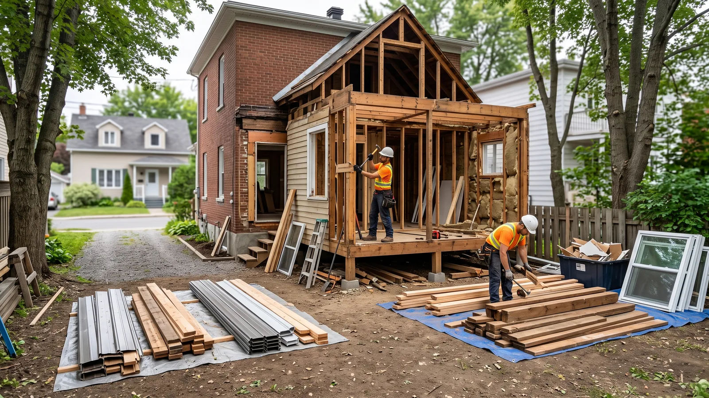
cities · trois-rivieresDémontage d'une petite annexe à Trois-Rivières, matériaux séparés sur un chantier propre. Photographie documentaire haut de gamme, démolition résidentielle québécoise réaliste, chantier propre et calme, proportions crédibles, lumière naturelle, composition horizontale 16:9, aucun texte lisible, aucun logo, aucune adresse, aucune explosion, aucun effondrement, aucun travailleur sans équipement de protection.
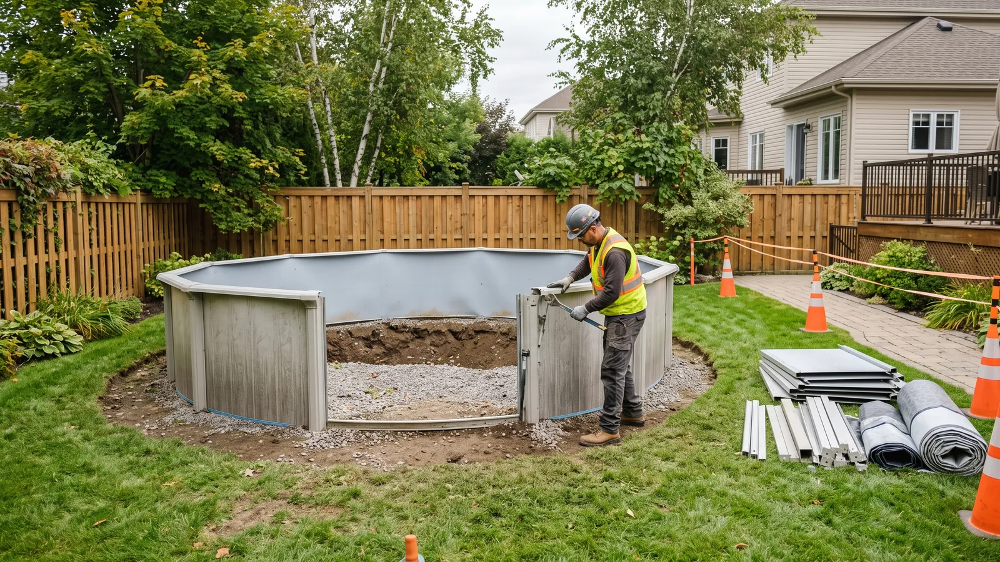
cities · terrebonnePiscine hors terre retirée à Terrebonne, cour familiale sécurisée. Photographie documentaire haut de gamme, démolition résidentielle québécoise réaliste, chantier propre et calme, proportions crédibles, lumière naturelle, composition horizontale 16:9, aucun texte lisible, aucun logo, aucune adresse, aucune explosion, aucun effondrement, aucun travailleur sans équipement de protection.
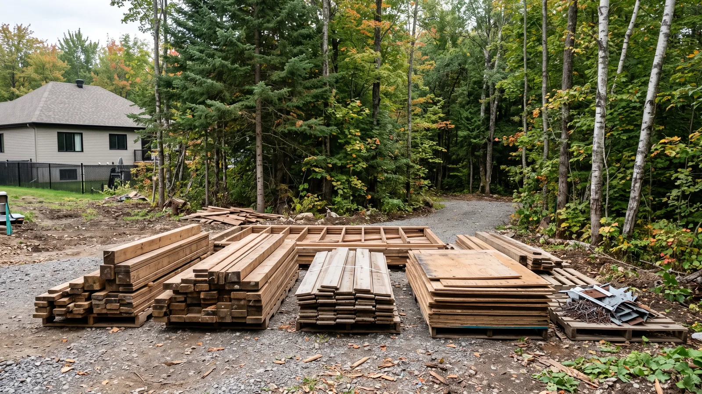
cities · saint-jeromeRemise en bois démontée à Saint-Jérôme, matériaux triés et arbres en arrière-plan. Photographie documentaire haut de gamme, démolition résidentielle québécoise réaliste, chantier propre et calme, proportions crédibles, lumière naturelle, composition horizontale 16:9, aucun texte lisible, aucun logo, aucune adresse, aucune explosion, aucun effondrement, aucun travailleur sans équipement de protection.
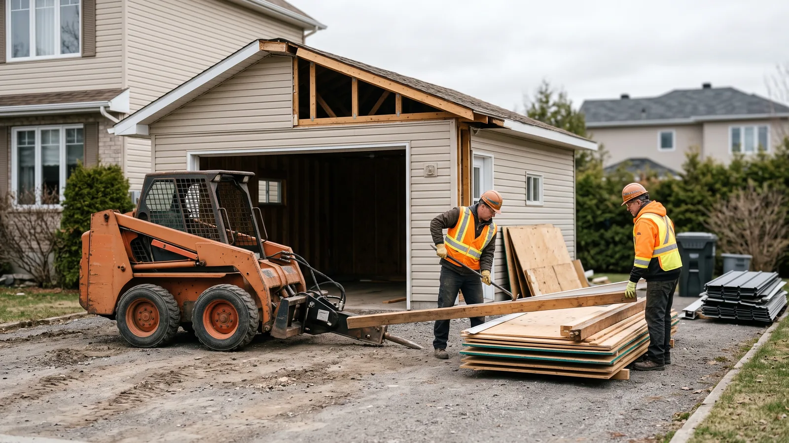
cities · mirabelGarage résidentiel en démantèlement contrôlé à Mirabel, terrain semi-urbain. Photographie documentaire haut de gamme, démolition résidentielle québécoise réaliste, chantier propre et calme, proportions crédibles, lumière naturelle, composition horizontale 16:9, aucun texte lisible, aucun logo, aucune adresse, aucune explosion, aucun effondrement, aucun travailleur sans équipement de protection.
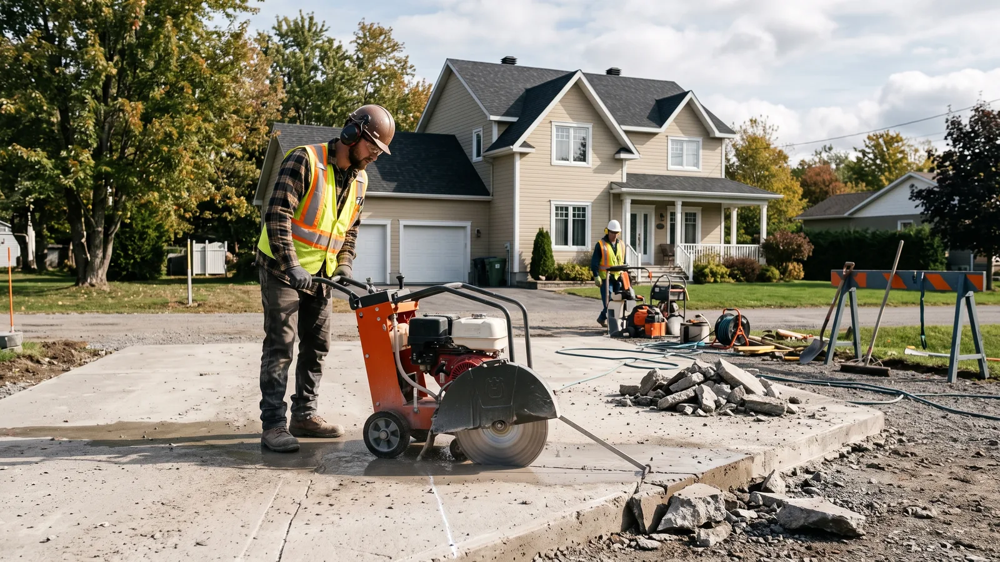
cities · saint-lin-laurentidesDalle de béton découpée à Saint-Lin–Laurentides, maison unifamiliale en arrière-plan. Photographie documentaire haut de gamme, démolition résidentielle québécoise réaliste, chantier propre et calme, proportions crédibles, lumière naturelle, composition horizontale 16:9, aucun texte lisible, aucun logo, aucune adresse, aucune explosion, aucun effondrement, aucun travailleur sans équipement de protection.
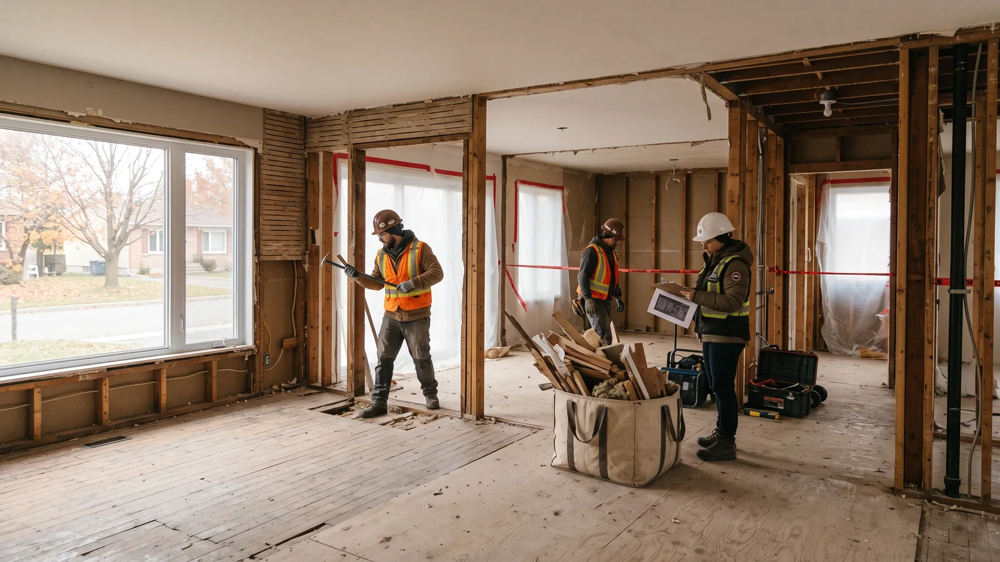
cities · drummondvilleDémolition intérieure planifiée à Drummondville, espace résidentiel protégé. Photographie documentaire haut de gamme, démolition résidentielle québécoise réaliste, chantier propre et calme, proportions crédibles, lumière naturelle, composition horizontale 16:9, aucun texte lisible, aucun logo, aucune adresse, aucune explosion, aucun effondrement, aucun travailleur sans équipement de protection.
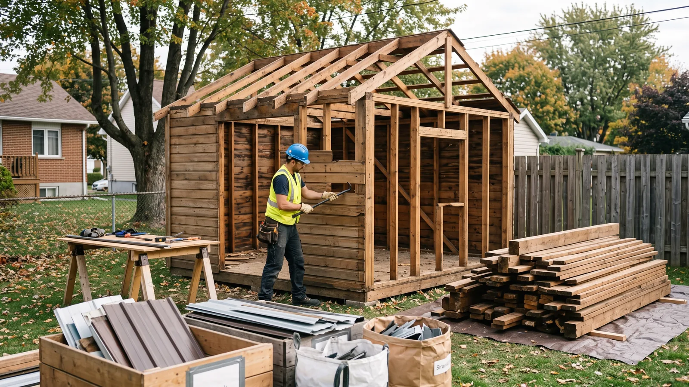
cities · granbyRemise résidentielle en démontage à Granby, chantier ordonné et proportions crédibles. Photographie documentaire haut de gamme, démolition résidentielle québécoise réaliste, chantier propre et calme, proportions crédibles, lumière naturelle, composition horizontale 16:9, aucun texte lisible, aucun logo, aucune adresse, aucune explosion, aucun effondrement, aucun travailleur sans équipement de protection.
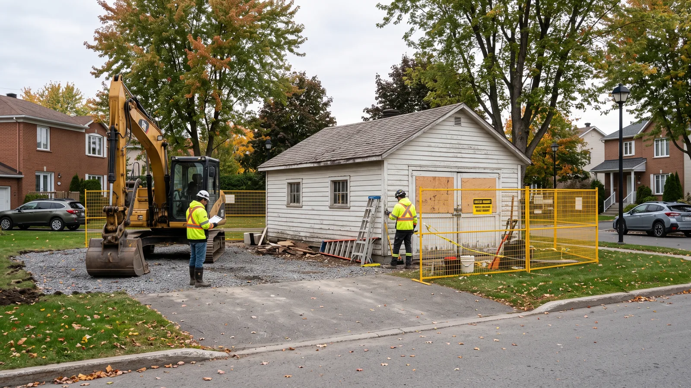
cities · blainvilleGarage détaché préparé pour démolition à Blainville, rue résidentielle calme. Photographie documentaire haut de gamme, démolition résidentielle québécoise réaliste, chantier propre et calme, proportions crédibles, lumière naturelle, composition horizontale 16:9, aucun texte lisible, aucun logo, aucune adresse, aucune explosion, aucun effondrement, aucun travailleur sans équipement de protection.
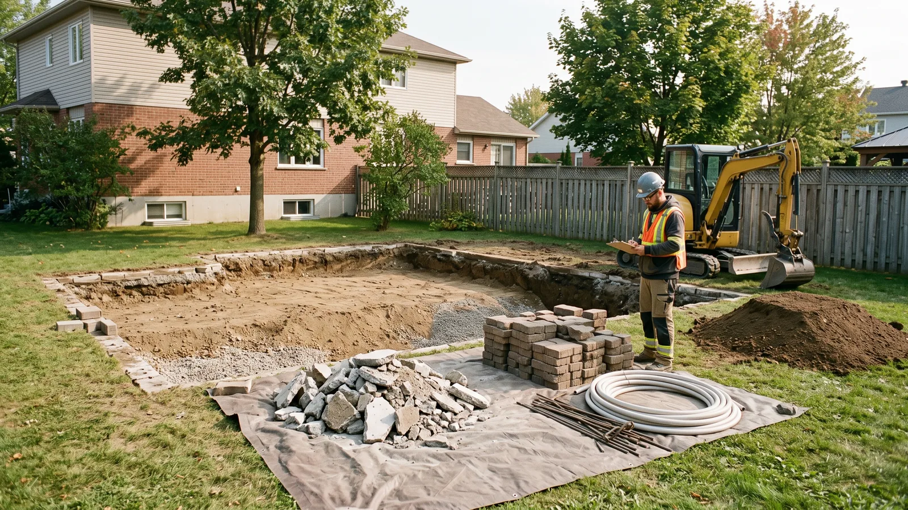
cities · repentignyRetrait d'une piscine résidentielle à Repentigny, matériaux regroupés sans marque. Photographie documentaire haut de gamme, démolition résidentielle québécoise réaliste, chantier propre et calme, proportions crédibles, lumière naturelle, composition horizontale 16:9, aucun texte lisible, aucun logo, aucune adresse, aucune explosion, aucun effondrement, aucun travailleur sans équipement de protection.
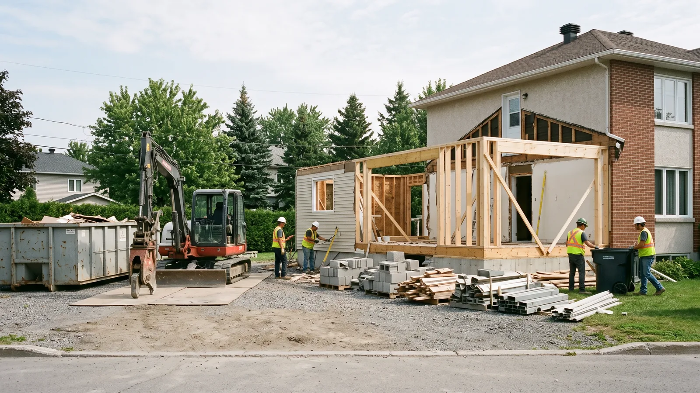
cities · mascoucheDémontage contrôlé d'une annexe résidentielle à Mascouche, terrain propre. Photographie documentaire haut de gamme, démolition résidentielle québécoise réaliste, chantier propre et calme, proportions crédibles, lumière naturelle, composition horizontale 16:9, aucun texte lisible, aucun logo, aucune adresse, aucune explosion, aucun effondrement, aucun travailleur sans équipement de protection.
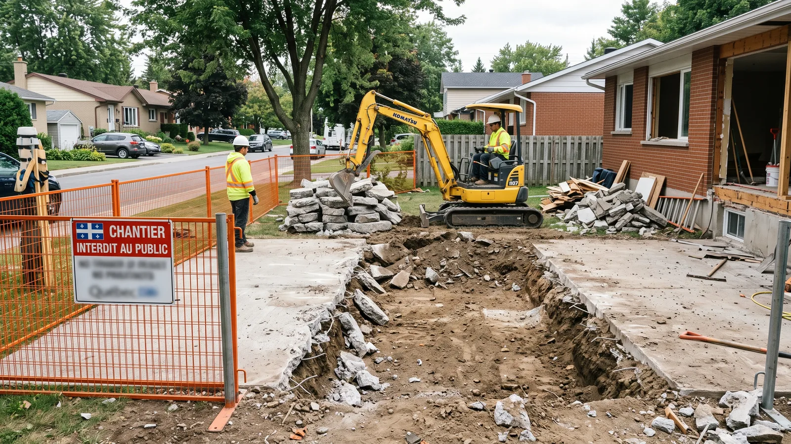
cities · saint-eustacheDalle de béton retirée à Saint-Eustache, chantier résidentiel sécurisé. Photographie documentaire haut de gamme, démolition résidentielle québécoise réaliste, chantier propre et calme, proportions crédibles, lumière naturelle, composition horizontale 16:9, aucun texte lisible, aucun logo, aucune adresse, aucune explosion, aucun effondrement, aucun travailleur sans équipement de protection.
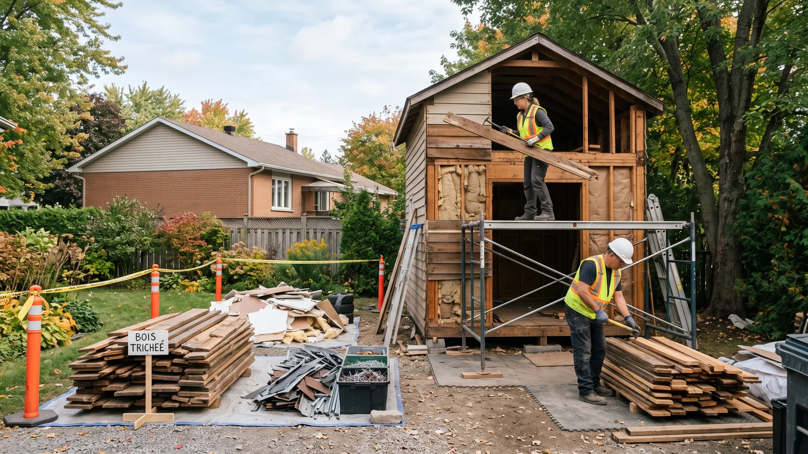
cities · lorraineDémontage contrôlé d'une remise résidentielle à Lorraine, bois trié et zone sécurisée. Photographie documentaire haut de gamme, démolition résidentielle québécoise réaliste, chantier propre et calme, proportions crédibles, lumière naturelle, composition horizontale 16:9, aucun texte lisible, aucun logo, aucune adresse, aucune explosion, aucun effondrement, aucun travailleur sans équipement de protection.
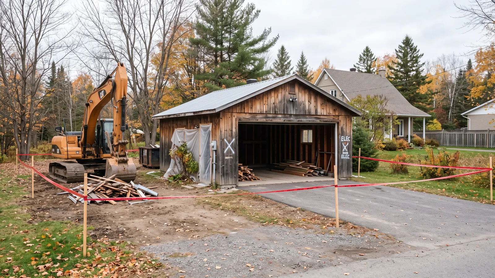
cities · mandevilleGarage résidentiel préparé pour démolition à Mandeville, chantier calme et propre. Photographie documentaire haut de gamme, démolition résidentielle québécoise réaliste, chantier propre et calme, proportions crédibles, lumière naturelle, composition horizontale 16:9, aucun texte lisible, aucun logo, aucune adresse, aucune explosion, aucun effondrement, aucun travailleur sans équipement de protection.
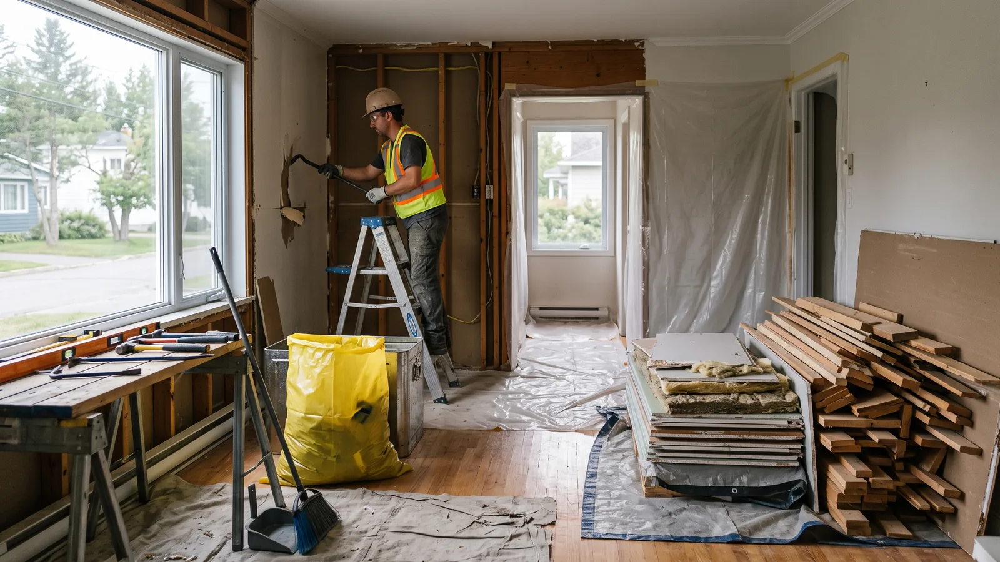
cities · mataneDémolition intérieure planifiée dans une maison à Matane, protections et matériaux regroupés. Photographie documentaire haut de gamme, démolition résidentielle québécoise réaliste, chantier propre et calme, proportions crédibles, lumière naturelle, composition horizontale 16:9, aucun texte lisible, aucun logo, aucune adresse, aucune explosion, aucun effondrement, aucun travailleur sans équipement de protection.
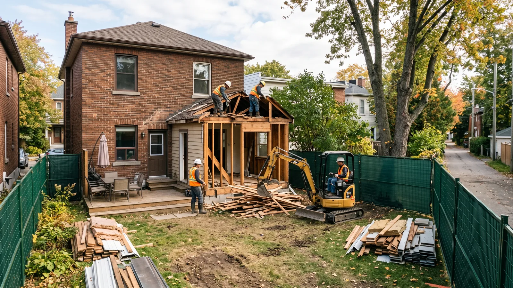
cities · montreal-ouestRetrait contrôlé d'une petite annexe résidentielle à Montréal-Ouest, cour protégée. Photographie documentaire haut de gamme, démolition résidentielle québécoise réaliste, chantier propre et calme, proportions crédibles, lumière naturelle, composition horizontale 16:9, aucun texte lisible, aucun logo, aucune adresse, aucune explosion, aucun effondrement, aucun travailleur sans équipement de protection.
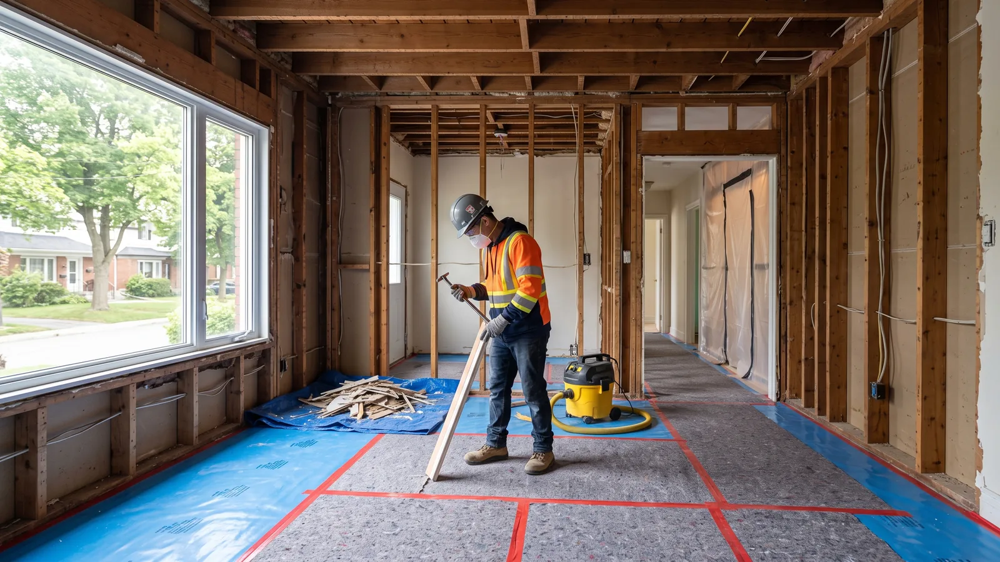
cities · mont-royalDémolition intérieure soignée à Mont-Royal, pièce vide et protections temporaires. Photographie documentaire haut de gamme, démolition résidentielle québécoise réaliste, chantier propre et calme, proportions crédibles, lumière naturelle, composition horizontale 16:9, aucun texte lisible, aucun logo, aucune adresse, aucune explosion, aucun effondrement, aucun travailleur sans équipement de protection.
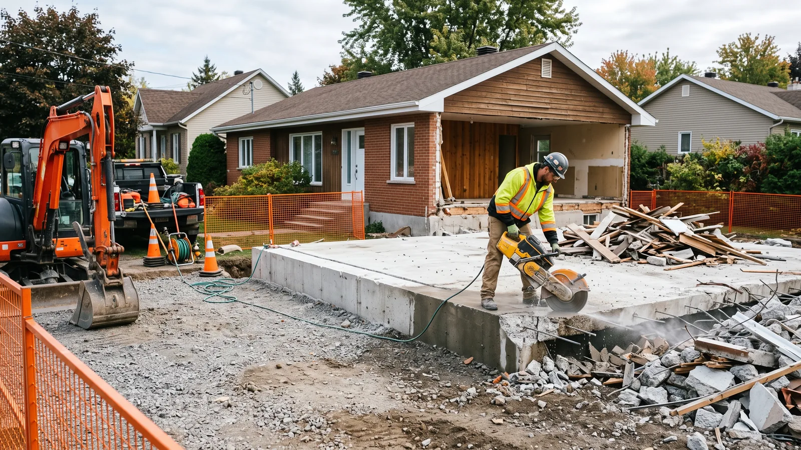
cities · mont-saint-gregoireDalle de béton résidentielle découpée à Mont-Saint-Grégoire, chantier ordonné. Photographie documentaire haut de gamme, démolition résidentielle québécoise réaliste, chantier propre et calme, proportions crédibles, lumière naturelle, composition horizontale 16:9, aucun texte lisible, aucun logo, aucune adresse, aucune explosion, aucun effondrement, aucun travailleur sans équipement de protection.
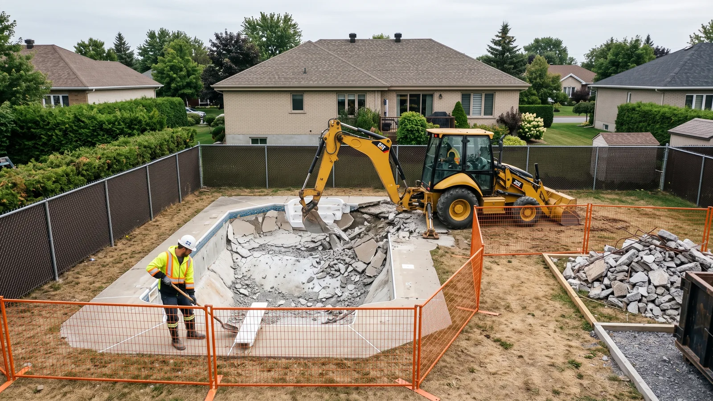
cities · notre-dame-de-l-ile-perrotRetrait d'une piscine résidentielle à Notre-Dame-de-l'Île-Perrot, cour sécurisée. Photographie documentaire haut de gamme, démolition résidentielle québécoise réaliste, chantier propre et calme, proportions crédibles, lumière naturelle, composition horizontale 16:9, aucun texte lisible, aucun logo, aucune adresse, aucune explosion, aucun effondrement, aucun travailleur sans équipement de protection.
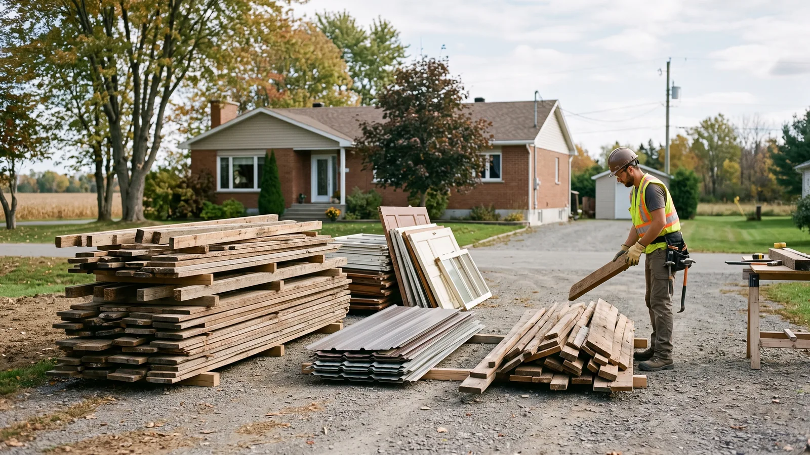
cities · notre-dame-du-mont-carmelRemise en bois démontée à Notre-Dame-du-Mont-Carmel, matériaux séparés. Photographie documentaire haut de gamme, démolition résidentielle québécoise réaliste, chantier propre et calme, proportions crédibles, lumière naturelle, composition horizontale 16:9, aucun texte lisible, aucun logo, aucune adresse, aucune explosion, aucun effondrement, aucun travailleur sans équipement de protection.
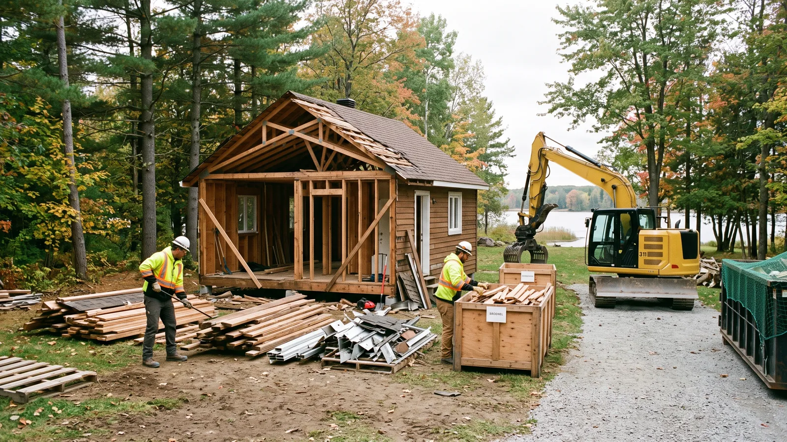
cities · okaPetite structure résidentielle démontée prudemment à Oka, terrain propre et naturel. Photographie documentaire haut de gamme, démolition résidentielle québécoise réaliste, chantier propre et calme, proportions crédibles, lumière naturelle, composition horizontale 16:9, aucun texte lisible, aucun logo, aucune adresse, aucune explosion, aucun effondrement, aucun travailleur sans équipement de protection.
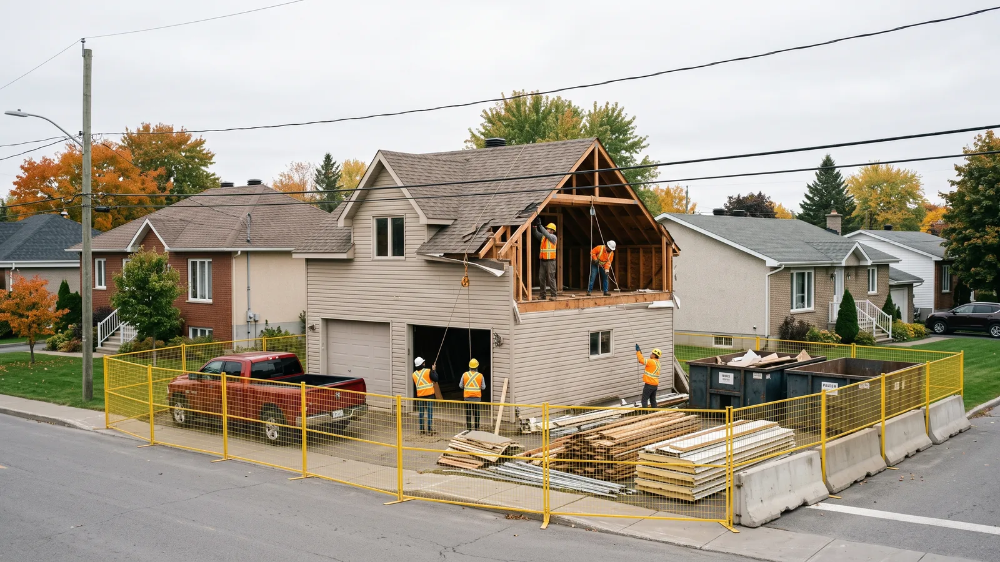
cities · ormstownGarage détaché en démantèlement contrôlé à Ormstown, zone clôturée. Photographie documentaire haut de gamme, démolition résidentielle québécoise réaliste, chantier propre et calme, proportions crédibles, lumière naturelle, composition horizontale 16:9, aucun texte lisible, aucun logo, aucune adresse, aucune explosion, aucun effondrement, aucun travailleur sans équipement de protection.
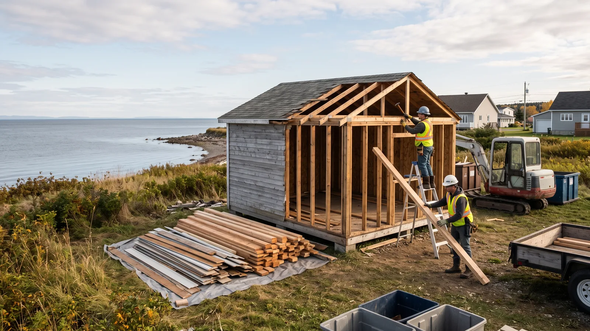
cities · paspebiacRemise résidentielle en démontage à Paspébiac, contexte côtier discret et chantier net. Photographie documentaire haut de gamme, démolition résidentielle québécoise réaliste, chantier propre et calme, proportions crédibles, lumière naturelle, composition horizontale 16:9, aucun texte lisible, aucun logo, aucune adresse, aucune explosion, aucun effondrement, aucun travailleur sans équipement de protection.
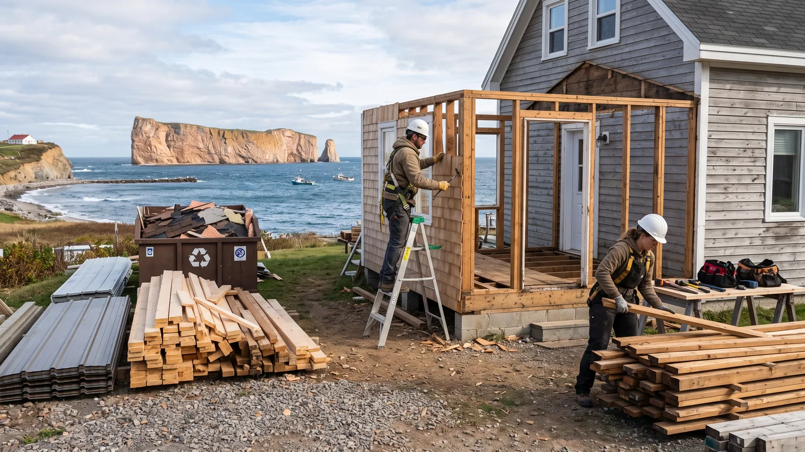
cities · perceDémontage prudent d'une petite annexe à Percé, matériaux triés et proportions réalistes. Photographie documentaire haut de gamme, démolition résidentielle québécoise réaliste, chantier propre et calme, proportions crédibles, lumière naturelle, composition horizontale 16:9, aucun texte lisible, aucun logo, aucune adresse, aucune explosion, aucun effondrement, aucun travailleur sans équipement de protection.
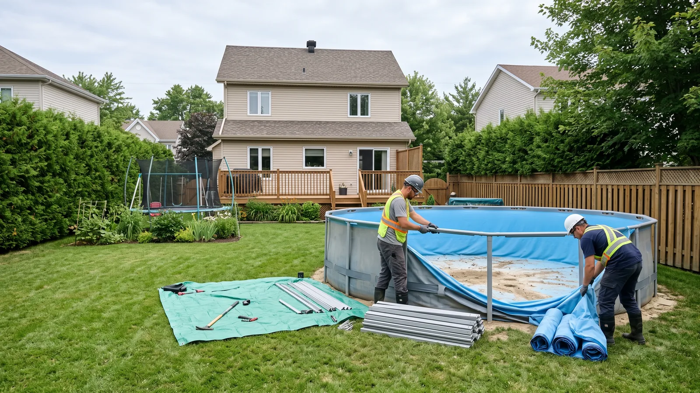
cities · pointe-calumetRetrait d'une piscine hors terre à Pointe-Calumet, cour familiale protégée. Photographie documentaire haut de gamme, démolition résidentielle québécoise réaliste, chantier propre et calme, proportions crédibles, lumière naturelle, composition horizontale 16:9, aucun texte lisible, aucun logo, aucune adresse, aucune explosion, aucun effondrement, aucun travailleur sans équipement de protection.
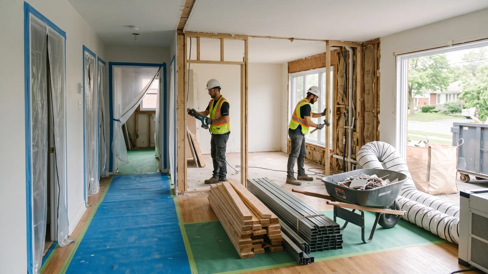
cities · pointe-claireDémolition intérieure contrôlée à Pointe-Claire, surfaces protégées et débris limités. Photographie documentaire haut de gamme, démolition résidentielle québécoise réaliste, chantier propre et calme, proportions crédibles, lumière naturelle, composition horizontale 16:9, aucun texte lisible, aucun logo, aucune adresse, aucune explosion, aucun effondrement, aucun travailleur sans équipement de protection.
cities · pontiacGarage résidentiel préparé pour démolition à Pontiac, terrain semi-rural calme. Photographie documentaire haut de gamme, démolition résidentielle québécoise réaliste, chantier propre et calme, proportions crédibles, lumière naturelle, composition horizontale 16:9, aucun texte lisible, aucun logo, aucune adresse, aucune explosion, aucun effondrement, aucun travailleur sans équipement de protection.
cities · port-daniel-gasconsPetite remise démontée à Port-Daniel–Gascons, bois trié et paysage côtier discret. Photographie documentaire haut de gamme, démolition résidentielle québécoise réaliste, chantier propre et calme, proportions crédibles, lumière naturelle, composition horizontale 16:9, aucun texte lisible, aucun logo, aucune adresse, aucune explosion, aucun effondrement, aucun travailleur sans équipement de protection.
cities · saint-adolphe-d-howardDalle de béton retirée à Saint-Adolphe-d'Howard, terrain boisé et chantier sécurisé. Photographie documentaire haut de gamme, démolition résidentielle québécoise réaliste, chantier propre et calme, proportions crédibles, lumière naturelle, composition horizontale 16:9, aucun texte lisible, aucun logo, aucune adresse, aucune explosion, aucun effondrement, aucun travailleur sans équipement de protection.
cities · saint-alphonse-rodriguezRemise résidentielle démontée à Saint-Alphonse-Rodriguez, matériaux triés. Photographie documentaire haut de gamme, démolition résidentielle québécoise réaliste, chantier propre et calme, proportions crédibles, lumière naturelle, composition horizontale 16:9, aucun texte lisible, aucun logo, aucune adresse, aucune explosion, aucun effondrement, aucun travailleur sans équipement de protection.
cities · saint-anicetRetrait contrôlé d'une terrasse de béton à Saint-Anicet, zone propre près d'une maison. Photographie documentaire haut de gamme, démolition résidentielle québécoise réaliste, chantier propre et calme, proportions crédibles, lumière naturelle, composition horizontale 16:9, aucun texte lisible, aucun logo, aucune adresse, aucune explosion, aucun effondrement, aucun travailleur sans équipement de protection.
cities · saint-blaise-sur-richelieuGarage résidentiel en démontage à Saint-Blaise-sur-Richelieu, chantier ordonné. Photographie documentaire haut de gamme, démolition résidentielle québécoise réaliste, chantier propre et calme, proportions crédibles, lumière naturelle, composition horizontale 16:9, aucun texte lisible, aucun logo, aucune adresse, aucune explosion, aucun effondrement, aucun travailleur sans équipement de protection.
cities · saint-bruno-de-montarvilleDémolition intérieure planifiée à Saint-Bruno-de-Montarville, protections visibles. Photographie documentaire haut de gamme, démolition résidentielle québécoise réaliste, chantier propre et calme, proportions crédibles, lumière naturelle, composition horizontale 16:9, aucun texte lisible, aucun logo, aucune adresse, aucune explosion, aucun effondrement, aucun travailleur sans équipement de protection.
cities · saint-calixteRemise en bois démontée à Saint-Calixte, cour boisée et matériaux regroupés. Photographie documentaire haut de gamme, démolition résidentielle québécoise réaliste, chantier propre et calme, proportions crédibles, lumière naturelle, composition horizontale 16:9, aucun texte lisible, aucun logo, aucune adresse, aucune explosion, aucun effondrement, aucun travailleur sans équipement de protection.
cities · saint-damienPetite annexe résidentielle en démantèlement à Saint-Damien, terrain propre. Photographie documentaire haut de gamme, démolition résidentielle québécoise réaliste, chantier propre et calme, proportions crédibles, lumière naturelle, composition horizontale 16:9, aucun texte lisible, aucun logo, aucune adresse, aucune explosion, aucun effondrement, aucun travailleur sans équipement de protection.
cities · sainte-anne-de-sabrevoisRetrait d'une piscine résidentielle à Sainte-Anne-de-Sabrevois, cour sécurisée. Photographie documentaire haut de gamme, démolition résidentielle québécoise réaliste, chantier propre et calme, proportions crédibles, lumière naturelle, composition horizontale 16:9, aucun texte lisible, aucun logo, aucune adresse, aucune explosion, aucun effondrement, aucun travailleur sans équipement de protection.
cities · sainte-beatrixDalle de béton découpée à Sainte-Béatrix, chantier résidentiel calme et réaliste. Photographie documentaire haut de gamme, démolition résidentielle québécoise réaliste, chantier propre et calme, proportions crédibles, lumière naturelle, composition horizontale 16:9, aucun texte lisible, aucun logo, aucune adresse, aucune explosion, aucun effondrement, aucun travailleur sans équipement de protection.
cities · sainte-catherine-de-hatleyGarage détaché préparé pour démolition à Sainte-Catherine-de-Hatley. Photographie documentaire haut de gamme, démolition résidentielle québécoise réaliste, chantier propre et calme, proportions crédibles, lumière naturelle, composition horizontale 16:9, aucun texte lisible, aucun logo, aucune adresse, aucune explosion, aucun effondrement, aucun travailleur sans équipement de protection.
cities · sainte-emelie-de-l-energieRemise résidentielle démontée à Sainte-Émélie-de-l'Énergie, bois trié. Photographie documentaire haut de gamme, démolition résidentielle québécoise réaliste, chantier propre et calme, proportions crédibles, lumière naturelle, composition horizontale 16:9, aucun texte lisible, aucun logo, aucune adresse, aucune explosion, aucun effondrement, aucun travailleur sans équipement de protection.
cities · sainte-julienneDémolition intérieure contrôlée à Sainte-Julienne, pièce protégée et vide. Photographie documentaire haut de gamme, démolition résidentielle québécoise réaliste, chantier propre et calme, proportions crédibles, lumière naturelle, composition horizontale 16:9, aucun texte lisible, aucun logo, aucune adresse, aucune explosion, aucun effondrement, aucun travailleur sans équipement de protection.
cities · saint-gabriel-de-brandonRetrait d'une petite structure à Saint-Gabriel-de-Brandon, matériaux séparés. Photographie documentaire haut de gamme, démolition résidentielle québécoise réaliste, chantier propre et calme, proportions crédibles, lumière naturelle, composition horizontale 16:9, aucun texte lisible, aucun logo, aucune adresse, aucune explosion, aucun effondrement, aucun travailleur sans équipement de protection.
cities · saint-hippolyteDalle de béton résidentielle retirée à Saint-Hippolyte, terrain boisé. Photographie documentaire haut de gamme, démolition résidentielle québécoise réaliste, chantier propre et calme, proportions crédibles, lumière naturelle, composition horizontale 16:9, aucun texte lisible, aucun logo, aucune adresse, aucune explosion, aucun effondrement, aucun travailleur sans équipement de protection.
cities · saint-jean-de-mathaGarage résidentiel en démantèlement à Saint-Jean-de-Matha, zone clôturée. Photographie documentaire haut de gamme, démolition résidentielle québécoise réaliste, chantier propre et calme, proportions crédibles, lumière naturelle, composition horizontale 16:9, aucun texte lisible, aucun logo, aucune adresse, aucune explosion, aucun effondrement, aucun travailleur sans équipement de protection.
cities · saint-lambertDémolition intérieure soignée dans une maison à Saint-Lambert, protections au sol. Photographie documentaire haut de gamme, démolition résidentielle québécoise réaliste, chantier propre et calme, proportions crédibles, lumière naturelle, composition horizontale 16:9, aucun texte lisible, aucun logo, aucune adresse, aucune explosion, aucun effondrement, aucun travailleur sans équipement de protection.
cities · saint-lazareRetrait d'une piscine hors terre à Saint-Lazare, cour familiale sécurisée. Photographie documentaire haut de gamme, démolition résidentielle québécoise réaliste, chantier propre et calme, proportions crédibles, lumière naturelle, composition horizontale 16:9, aucun texte lisible, aucun logo, aucune adresse, aucune explosion, aucun effondrement, aucun travailleur sans équipement de protection.
cities · saint-pascalRemise en bois démontée à Saint-Pascal, matériaux récupérables empilés proprement. Photographie documentaire haut de gamme, démolition résidentielle québécoise réaliste, chantier propre et calme, proportions crédibles, lumière naturelle, composition horizontale 16:9, aucun texte lisible, aucun logo, aucune adresse, aucune explosion, aucun effondrement, aucun travailleur sans équipement de protection.
cities · saint-paul-de-l-ile-aux-noixPetite annexe résidentielle retirée à Saint-Paul-de-l'Île-aux-Noix, chantier net. Photographie documentaire haut de gamme, démolition résidentielle québécoise réaliste, chantier propre et calme, proportions crédibles, lumière naturelle, composition horizontale 16:9, aucun texte lisible, aucun logo, aucune adresse, aucune explosion, aucun effondrement, aucun travailleur sans équipement de protection.
cities · saint-victorDalle de béton découpée à Saint-Victor, maison unifamiliale en arrière-plan. Photographie documentaire haut de gamme, démolition résidentielle québécoise réaliste, chantier propre et calme, proportions crédibles, lumière naturelle, composition horizontale 16:9, aucun texte lisible, aucun logo, aucune adresse, aucune explosion, aucun effondrement, aucun travailleur sans équipement de protection.
cities · sept-ilesGarage résidentiel préparé pour démolition à Sept-Îles, contexte nordique réaliste. Photographie documentaire haut de gamme, démolition résidentielle québécoise réaliste, chantier propre et calme, proportions crédibles, lumière naturelle, composition horizontale 16:9, aucun texte lisible, aucun logo, aucune adresse, aucune explosion, aucun effondrement, aucun travailleur sans équipement de protection.
cities · shawiniganDémolition intérieure planifiée à Shawinigan, débris triés et espace protégé. Photographie documentaire haut de gamme, démolition résidentielle québécoise réaliste, chantier propre et calme, proportions crédibles, lumière naturelle, composition horizontale 16:9, aucun texte lisible, aucun logo, aucune adresse, aucune explosion, aucun effondrement, aucun travailleur sans équipement de protection.
cities · sheffordRemise résidentielle démontée à Shefford, terrain verdoyant et chantier ordonné. Photographie documentaire haut de gamme, démolition résidentielle québécoise réaliste, chantier propre et calme, proportions crédibles, lumière naturelle, composition horizontale 16:9, aucun texte lisible, aucun logo, aucune adresse, aucune explosion, aucun effondrement, aucun travailleur sans équipement de protection.
cities · sorel-tracyRetrait contrôlé d'une terrasse de béton à Sorel-Tracy, zone sécurisée. Photographie documentaire haut de gamme, démolition résidentielle québécoise réaliste, chantier propre et calme, proportions crédibles, lumière naturelle, composition horizontale 16:9, aucun texte lisible, aucun logo, aucune adresse, aucune explosion, aucun effondrement, aucun travailleur sans équipement de protection.
cities · thetford-minesGarage détaché en démontage contrôlé à Thetford Mines, matériaux triés. Photographie documentaire haut de gamme, démolition résidentielle québécoise réaliste, chantier propre et calme, proportions crédibles, lumière naturelle, composition horizontale 16:9, aucun texte lisible, aucun logo, aucune adresse, aucune explosion, aucun effondrement, aucun travailleur sans équipement de protection.
cities · val-des-sourcesPetite structure résidentielle démontée à Val-des-Sources, chantier propre. Photographie documentaire haut de gamme, démolition résidentielle québécoise réaliste, chantier propre et calme, proportions crédibles, lumière naturelle, composition horizontale 16:9, aucun texte lisible, aucun logo, aucune adresse, aucune explosion, aucun effondrement, aucun travailleur sans équipement de protection.
cities · wentworth-nordRemise en bois retirée à Wentworth-Nord, contexte boisé et proportions crédibles. Photographie documentaire haut de gamme, démolition résidentielle québécoise réaliste, chantier propre et calme, proportions crédibles, lumière naturelle, composition horizontale 16:9, aucun texte lisible, aucun logo, aucune adresse, aucune explosion, aucun effondrement, aucun travailleur sans équipement de protection.
cities · westmountDémolition intérieure contrôlée à Westmount, surfaces protégées et débris triés. Photographie documentaire haut de gamme, démolition résidentielle québécoise réaliste, chantier propre et calme, proportions crédibles, lumière naturelle, composition horizontale 16:9, aucun texte lisible, aucun logo, aucune adresse, aucune explosion, aucun effondrement, aucun travailleur sans équipement de protection.
pool · demolition-01Démolition intérieure contrôlée dans une pièce résidentielle vide, protections temporaires et débris triés. Photographie documentaire haut de gamme, démolition résidentielle québécoise réaliste, chantier propre et calme, proportions crédibles, lumière naturelle, composition horizontale 16:9, aucun texte lisible, aucun logo, aucune adresse, aucune explosion, aucun effondrement, aucun travailleur sans équipement de protection.
pool · demolition-02Garage résidentiel préparé pour démontage, zone de travail clôturée et propre. Photographie documentaire haut de gamme, démolition résidentielle québécoise réaliste, chantier propre et calme, proportions crédibles, lumière naturelle, composition horizontale 16:9, aucun texte lisible, aucun logo, aucune adresse, aucune explosion, aucun effondrement, aucun travailleur sans équipement de protection.
pool · demolition-03Remise en bois démontée en sections, matériaux séparés sur une cour résidentielle. Photographie documentaire haut de gamme, démolition résidentielle québécoise réaliste, chantier propre et calme, proportions crédibles, lumière naturelle, composition horizontale 16:9, aucun texte lisible, aucun logo, aucune adresse, aucune explosion, aucun effondrement, aucun travailleur sans équipement de protection.
pool · demolition-04Piscine hors terre retirée avec cour résidentielle sécurisée. Photographie documentaire haut de gamme, démolition résidentielle québécoise réaliste, chantier propre et calme, proportions crédibles, lumière naturelle, composition horizontale 16:9, aucun texte lisible, aucun logo, aucune adresse, aucune explosion, aucun effondrement, aucun travailleur sans équipement de protection.
pool · demolition-05Dalle de béton résidentielle découpée en sections, chantier ordonné. Photographie documentaire haut de gamme, démolition résidentielle québécoise réaliste, chantier propre et calme, proportions crédibles, lumière naturelle, composition horizontale 16:9, aucun texte lisible, aucun logo, aucune adresse, aucune explosion, aucun effondrement, aucun travailleur sans équipement de protection.
pool · demolition-06Ancienne terrasse de béton retirée près d'une maison québécoise. Photographie documentaire haut de gamme, démolition résidentielle québécoise réaliste, chantier propre et calme, proportions crédibles, lumière naturelle, composition horizontale 16:9, aucun texte lisible, aucun logo, aucune adresse, aucune explosion, aucun effondrement, aucun travailleur sans équipement de protection.
pool · demolition-07Conteneur neutre avec matériaux de démolition triés, aucune marque visible. Photographie documentaire haut de gamme, démolition résidentielle québécoise réaliste, chantier propre et calme, proportions crédibles, lumière naturelle, composition horizontale 16:9, aucun texte lisible, aucun logo, aucune adresse, aucune explosion, aucun effondrement, aucun travailleur sans équipement de protection.
pool · demolition-08Zone de tri de bois, métal et béton sur un petit chantier résidentiel. Photographie documentaire haut de gamme, démolition résidentielle québécoise réaliste, chantier propre et calme, proportions crédibles, lumière naturelle, composition horizontale 16:9, aucun texte lisible, aucun logo, aucune adresse, aucune explosion, aucun effondrement, aucun travailleur sans équipement de protection.
pool · demolition-09Entrepreneur avec équipement de protection complet inspectant un chantier résidentiel. Photographie documentaire haut de gamme, démolition résidentielle québécoise réaliste, chantier propre et calme, proportions crédibles, lumière naturelle, composition horizontale 16:9, aucun texte lisible, aucun logo, aucune adresse, aucune explosion, aucun effondrement, aucun travailleur sans équipement de protection.
pool · demolition-10Démontage soigné d'armoires dans une cuisine vide et protégée. Photographie documentaire haut de gamme, démolition résidentielle québécoise réaliste, chantier propre et calme, proportions crédibles, lumière naturelle, composition horizontale 16:9, aucun texte lisible, aucun logo, aucune adresse, aucune explosion, aucun effondrement, aucun travailleur sans équipement de protection.
pool · demolition-11Retrait contrôlé de revêtement intérieur dans une maison en rénovation. Photographie documentaire haut de gamme, démolition résidentielle québécoise réaliste, chantier propre et calme, proportions crédibles, lumière naturelle, composition horizontale 16:9, aucun texte lisible, aucun logo, aucune adresse, aucune explosion, aucun effondrement, aucun travailleur sans équipement de protection.
pool · demolition-12Petit bâtiment résidentiel isolé avant un démontage planifié. Photographie documentaire haut de gamme, démolition résidentielle québécoise réaliste, chantier propre et calme, proportions crédibles, lumière naturelle, composition horizontale 16:9, aucun texte lisible, aucun logo, aucune adresse, aucune explosion, aucun effondrement, aucun travailleur sans équipement de protection.
pool · demolition-13Fondation résidentielle dégagée après retrait de matériaux, terrain propre. Photographie documentaire haut de gamme, démolition résidentielle québécoise réaliste, chantier propre et calme, proportions crédibles, lumière naturelle, composition horizontale 16:9, aucun texte lisible, aucun logo, aucune adresse, aucune explosion, aucun effondrement, aucun travailleur sans équipement de protection.
pool · demolition-14Allée résidentielle protégée pendant un chantier de démolition contrôlée. Photographie documentaire haut de gamme, démolition résidentielle québécoise réaliste, chantier propre et calme, proportions crédibles, lumière naturelle, composition horizontale 16:9, aucun texte lisible, aucun logo, aucune adresse, aucune explosion, aucun effondrement, aucun travailleur sans équipement de protection.
pool · demolition-15Outils de démantèlement rangés sur un chantier résidentiel calme. Photographie documentaire haut de gamme, démolition résidentielle québécoise réaliste, chantier propre et calme, proportions crédibles, lumière naturelle, composition horizontale 16:9, aucun texte lisible, aucun logo, aucune adresse, aucune explosion, aucun effondrement, aucun travailleur sans équipement de protection.
pool · demolition-16Bois récupérable empilé proprement à côté d'une remise démontée. Photographie documentaire haut de gamme, démolition résidentielle québécoise réaliste, chantier propre et calme, proportions crédibles, lumière naturelle, composition horizontale 16:9, aucun texte lisible, aucun logo, aucune adresse, aucune explosion, aucun effondrement, aucun travailleur sans équipement de protection.
pool · demolition-17Béton concassé regroupé pour transport, proportions réalistes. Photographie documentaire haut de gamme, démolition résidentielle québécoise réaliste, chantier propre et calme, proportions crédibles, lumière naturelle, composition horizontale 16:9, aucun texte lisible, aucun logo, aucune adresse, aucune explosion, aucun effondrement, aucun travailleur sans équipement de protection.
pool · demolition-18Escalier extérieur résidentiel retiré en sections, zone sécurisée. Photographie documentaire haut de gamme, démolition résidentielle québécoise réaliste, chantier propre et calme, proportions crédibles, lumière naturelle, composition horizontale 16:9, aucun texte lisible, aucun logo, aucune adresse, aucune explosion, aucun effondrement, aucun travailleur sans équipement de protection.
pool · demolition-19Démontage d'une petite galerie résidentielle, chantier net et sans danger. Photographie documentaire haut de gamme, démolition résidentielle québécoise réaliste, chantier propre et calme, proportions crédibles, lumière naturelle, composition horizontale 16:9, aucun texte lisible, aucun logo, aucune adresse, aucune explosion, aucun effondrement, aucun travailleur sans équipement de protection.
pool · demolition-20Mur intérieur retiré dans une pièce vide avec protections au sol. Photographie documentaire haut de gamme, démolition résidentielle québécoise réaliste, chantier propre et calme, proportions crédibles, lumière naturelle, composition horizontale 16:9, aucun texte lisible, aucun logo, aucune adresse, aucune explosion, aucun effondrement, aucun travailleur sans équipement de protection.
pool · demolition-21Salle de bain en démontage contrôlé, surfaces protégées et débris limités. Photographie documentaire haut de gamme, démolition résidentielle québécoise réaliste, chantier propre et calme, proportions crédibles, lumière naturelle, composition horizontale 16:9, aucun texte lisible, aucun logo, aucune adresse, aucune explosion, aucun effondrement, aucun travailleur sans équipement de protection.
pool · demolition-22Garage vide après démontage intérieur, matériaux séparés. Photographie documentaire haut de gamme, démolition résidentielle québécoise réaliste, chantier propre et calme, proportions crédibles, lumière naturelle, composition horizontale 16:9, aucun texte lisible, aucun logo, aucune adresse, aucune explosion, aucun effondrement, aucun travailleur sans équipement de protection.
pool · demolition-23Cour résidentielle après retrait d'une petite structure, sol nivelé avec soin. Photographie documentaire haut de gamme, démolition résidentielle québécoise réaliste, chantier propre et calme, proportions crédibles, lumière naturelle, composition horizontale 16:9, aucun texte lisible, aucun logo, aucune adresse, aucune explosion, aucun effondrement, aucun travailleur sans équipement de protection.
pool · demolition-24Inspection visuelle prudente de matériaux anciens par un travailleur protégé. Photographie documentaire haut de gamme, démolition résidentielle québécoise réaliste, chantier propre et calme, proportions crédibles, lumière naturelle, composition horizontale 16:9, aucun texte lisible, aucun logo, aucune adresse, aucune explosion, aucun effondrement, aucun travailleur sans équipement de protection.
pool · demolition-25Chantier de démolition résidentielle terminé, terrain propre et matériaux évacués. Photographie documentaire haut de gamme, démolition résidentielle québécoise réaliste, chantier propre et calme, proportions crédibles, lumière naturelle, composition horizontale 16:9, aucun texte lisible, aucun logo, aucune adresse, aucune explosion, aucun effondrement, aucun travailleur sans équipement de protection.